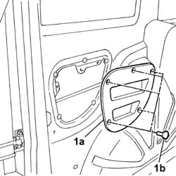
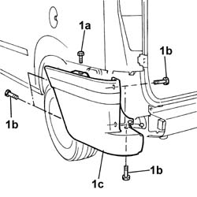
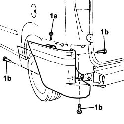
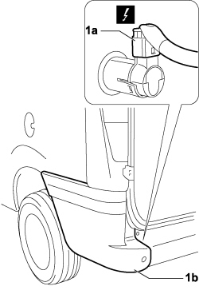

7210E68 rear bumper - side element
- Path
- Procedures > 72 PANELS AND FRAMES > 7210 REMOVING-REFITTING > 7210E external parts > 7210E68 rear bumper - side element
- Kind
- repair procedure (removal / refitting; the operation number is the code)
- Applies to
- all engines; all production periods
- Interactive page
- https://sloeber94.github.io/elrnDB-fDbl/en/#/2585269
Applies to: engines: 1.2 8v, 1.6 16v, 1.3 JTD 16V, 1.9 JTD 8V, 1.9 DIESEL; all production periods; only with equipment: Cargo trim level
 Removing
Removing
 Refitting
Refitting1. Remove panel (1a) by undoing retaining studs (1b).

Applies to: engines: 1.2 8v, 1.6 16v, 1.3 JTD 16V, 1.9 JTD 8V, 1.9 DIESEL; all production periods; only with equipment: Doblò trim level
Applies to: engines: 1.2 8v, 1.6 16v, 1.3 JTD 16V, 1.9 JTD 8V, 1.9 DIESEL; all production periods; only with equipment: Doblò trim level
1. Undo retaining bolt (1a) positioned inside the vehicle beneath the parcel rack mount, and bolts (1b), and remove bumper (1c).

Applies to: engines: 1.2 8v, 1.6 16v, 1.3 JTD 16V, 1.9 JTD 8V, 1.9 DIESEL; all production periods
Refitting
RemovingCheck that the bumper is undamaged.
Touch up the paintwork if necessary.
Fit the bumper and secure using the bolts.
Applies to: engines: 1.2 8v, 1.6 16v, 1.3 JTD 16V, 1.9 JTD 8V, 1.9 DIESEL; all production periods; only with equipment: Cargo trim level
Fit the panel and secure by means of the studs.
Applies to: engines: 1.2 8v, 1.6 16v, 1.3 JTD 16V, 1.9 JTD 8V, 1.9 DIESEL; all production periods; only with equipment: Doblò trim level
Applies to: engines: 1.4 8v, 1.6 16v, 1.3 JTD 16V, 1.9 JTD 8V; production: da 12/03; only with equipment: MY 2005
Removing
RefittingTurn the ignition key to the OFF position.
Lift the bonnet
Disconnect the negative battery terminal.
Description | Connector | |
|---|---|---|
- | BATTERY |
Op. 7040H80 REAR PARCEL SHELF - R.R.
1. Unscrew bolt (1a) located inside the vehicle under the parcel rack and bolts (1b).

Applies to: engines: 1.4 8v, 1.6 16v, 1.3 JTD 16V, 1.9 JTD 8V; production: da 12/03; only with equipment: MY 2005
1. Disconnect electrical connection (1a) from the parking obstacle detection sensor and remove bumper (1b) from the vehicle.
Description | Connector | |
|---|---|---|
1a | PARKING SENSOR UNIT |
Description | Connector | |
|---|---|---|
1a | PARKING SENSOR UNIT |

Applies to: engines: 1.4 8v, 1.6 16v, 1.3 JTD 16V, 1.9 JTD 8V; production: da 12/03; only with equipment: MY 2005
Refitting
RemovingCheck that the bumper is not damaged.
If necessary, retouch the paintwork.
Connect the electrical connection to the parking obstacle detection sensor.
Description | Connector | |
|---|---|---|
- | PARKING SENSOR UNIT |
Description | Connector | |
|---|---|---|
- | PARKING SENSOR UNIT |
Fit the bumper and secure it using the bolts.
Op. 7040H80 REAR PARCEL SHELF - R.R.
Connect the negative battery terminal.
Description | Connector | |
|---|---|---|
- | BATTERY |